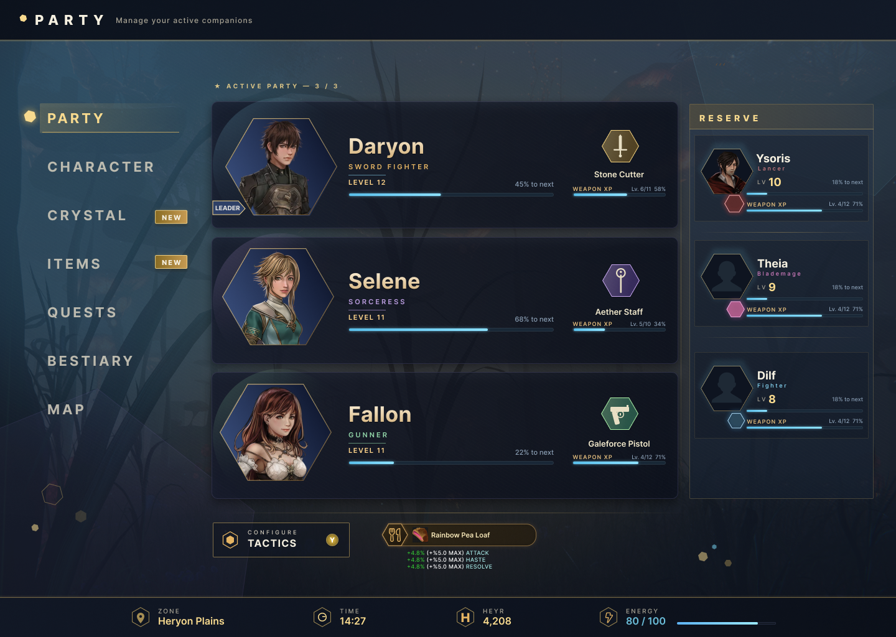
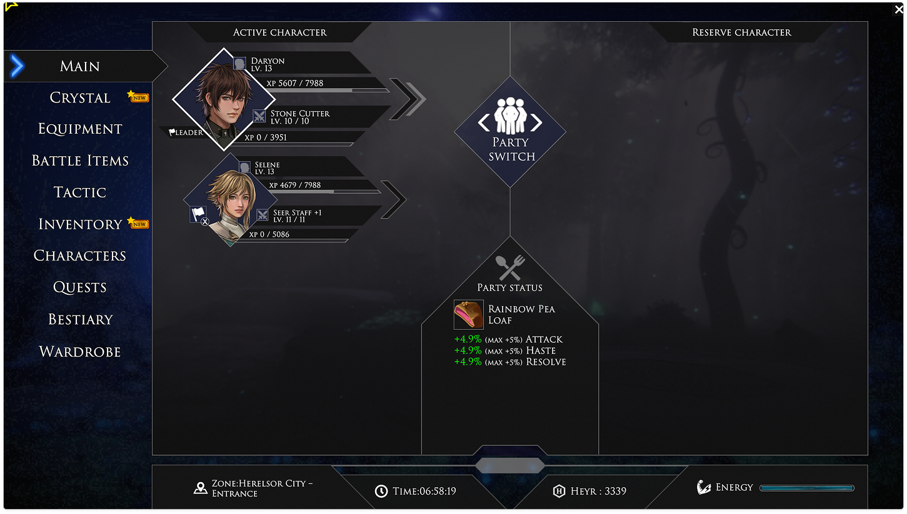
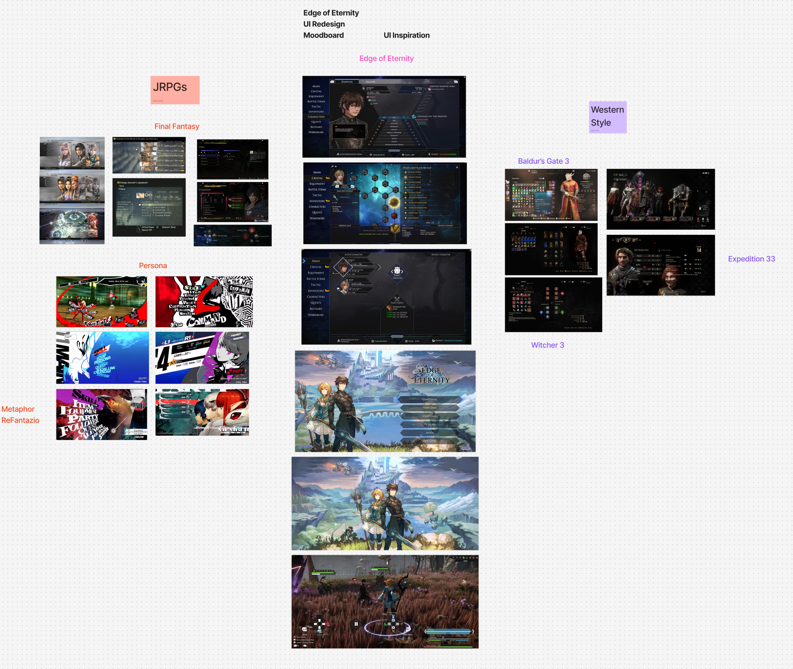
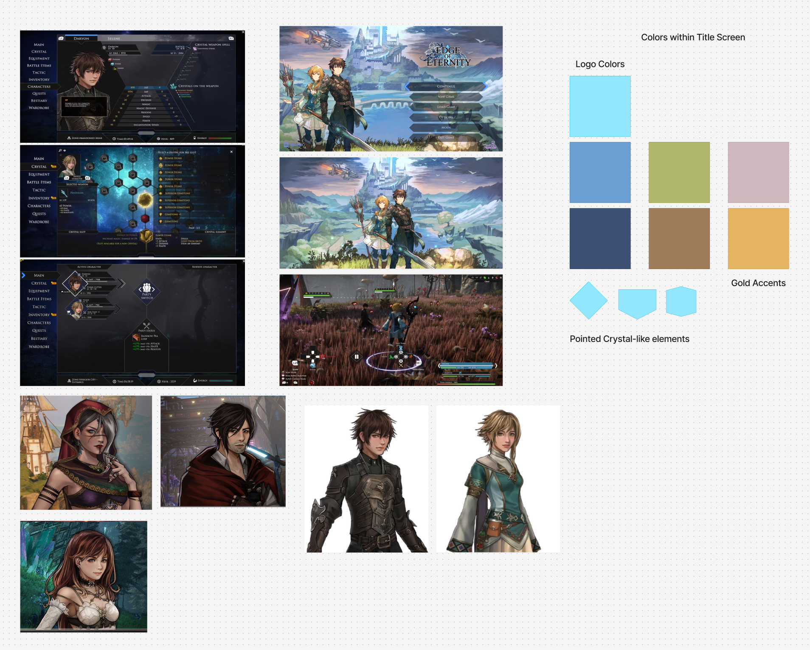
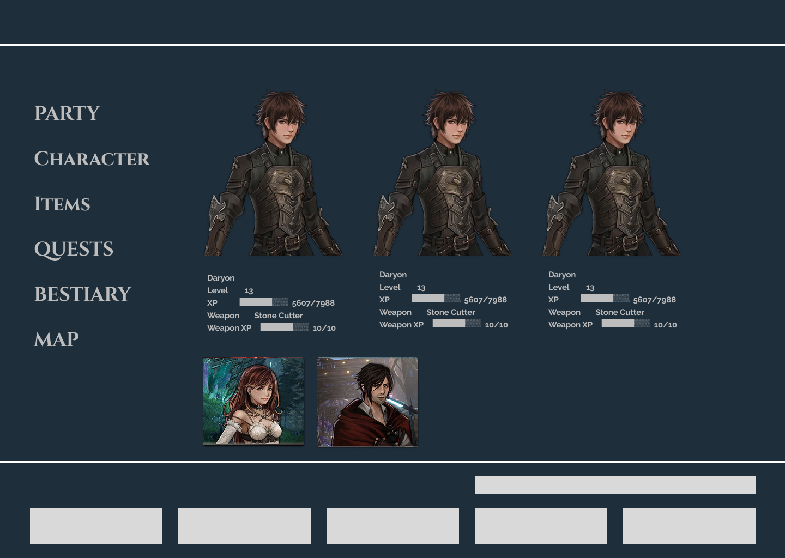
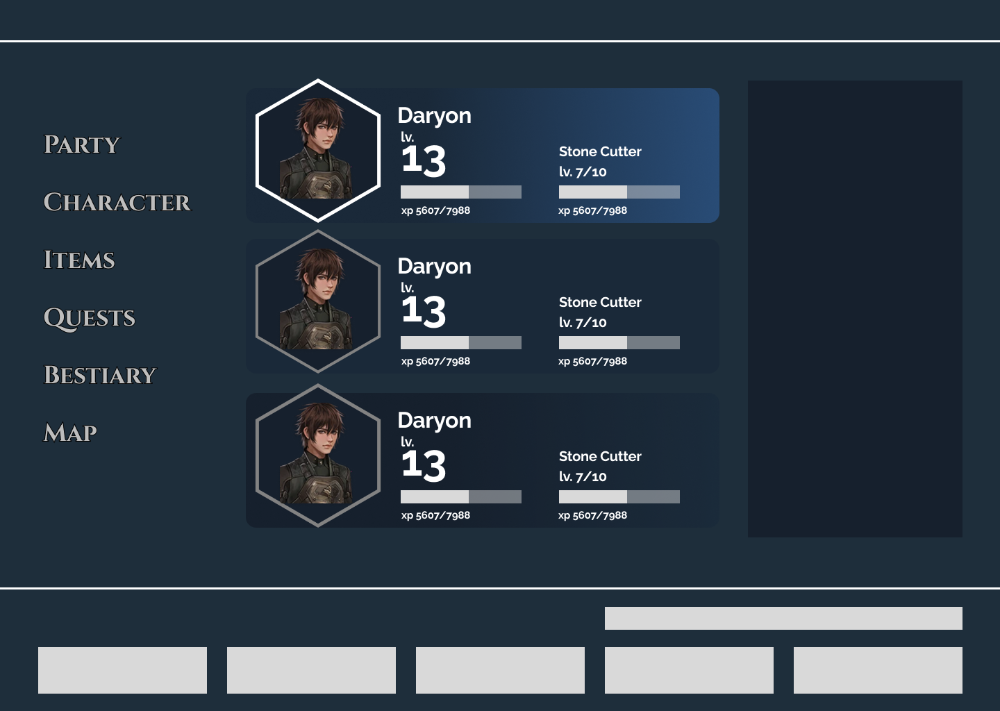
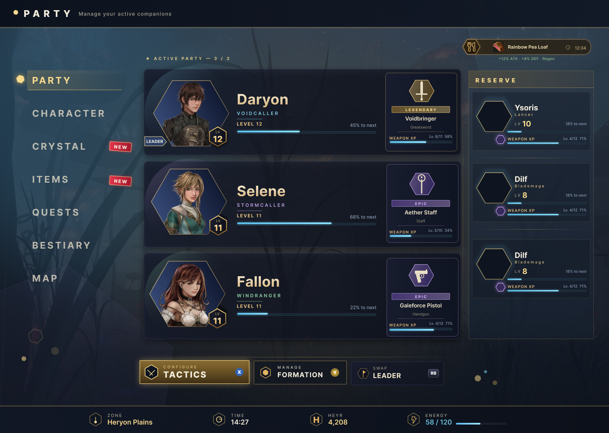

Edge of Eternity · Personal Redesign Study · 2026
A study in reducing cognitive load, building a consistent stylized visual language, and designing for familiar interface patterns in a small-studio JRPG.

Edge of Eternity is a small-studio JRPG with ambitious combat and an overwhelming amount of menu real estate. The party screen, one of the most frequently revisited surfaces in the game, surfaces thirteen distinct actions in a single layer. Typography fights for attention. Hierarchy is flat. Players rely on memorization rather than on the interface.
Ambitious game design elements. Missing the mark with interface. The original shipped with 10 menu action tabs, widespread information clarity issues, and significant menu item redundancy.

Before touching pixels, I collected a reference set across contemporary JRPG and RPG interfaces — Persona 5 for rhythm and type, Final Fantasy XVI for density, and a handful of PC-first UIs that handle information density well. Nine references were distilled into three design principles.

The game itself told me what the interface should feel like. Warm golden light against deep, cool shadow. Ornamented but never cluttered. Readable in a single glance during combat, reflective when the action rests.
Rather than importing a generic dark-UI color system, I extracted the palette directly from the game's own environments, lighting, and character art.
Embracing the game's art direction rather than imposing a generic UI palette was the decision that made everything else cohere.

Adjusted the infrastructure of the main menu to be more cohesive. Every item in the original nav had to earn its place in the redesign — or get merged, renamed, or moved.
| Original | Redesigned | Decision | Rationale | |
|---|---|---|---|---|
| Main | → | Party | Renamed | Renamed "Main" to Party. |
| Inventory + Battle Items | → | Items | Merged | Merged Battle Items and inventory. |
| Equip | → | Character | Merged | Merged into character menu with tab list. |
| Skills | → | Character | Merged | Combat-critical. Grouped with character. |
| Crystals | → | Crystals | Kept | Unique game system. Retained identity. |
| Formation | → | Formation | Moved | Moved to party menu as a button press. |
| Characters | → | Character | Merged | Moved into a tab in Character menu as "Status". |
| Bestiary | → | Bestiary | Kept | Kept as is, but considered adding a Journal button. |
| Map (Button press) | → | Map | Added | Added menu function. |
| Party Status | → | Food Icon | Added | Food buff bar added. |
Two candidates. Same information, opposite reading orders — one horizontal, one vertical. Both respect the new menu hierarchy; neither survives unchanged.

Reading order is horizontal. Character detail occupies the hero zone.

Reading order is vertical. Smaller portraits, better use of space. Hexagon elements.
The first high-fidelity pass was tonally correct but visually overdressed. I toned down visual elements to keep the focus on important details.

The final design resolves every issue identified in the first pass while preserving the tonal direction established in research. Navigation drops from 13 items to 7. The food buff earns a persistent anchor in the action bar. Hexagonal portrait frames mirror the combat grid. The reserve panel uses silhouettes for unrevealed characters — intentional, not placeholder.
Nine decisions, each traceable to a research insight or a constraint of the source material.
The hexagon mirrors the combat grid — the fundamental mechanic of every battle in Edge of Eternity. Characters and enemies move between hexagonal tiles. Using the same shape as the portrait frame connects the interface directly to the gameplay it supports. The shape carries meaning rather than being decorative.
Frame color indicates character class rather than weapon rarity. On a party screen, knowing your team composition at a glance is more useful than knowing gear quality. Rarity information belongs on the equipment screen where gear decisions are made.
Character XP and Weapon XP are the only bars shown. Each is given visible space to make it easy to scan both. The original was tougher to read at a glance.
Weapon name, level, and XP progress shown per active character. Relevant for players deciding whether to upgrade or swap equipment. Weapon type icon added for faster scanning.
Compact cards for the two reserve members showing name, class, level, and weapon XP. Silhouettes used for unrevealed party members — intentional, not placeholder. Avoids spoiling the game's cast for new players.
Swap Leader and party formation removed as dedicated buttons; both are handled through contextual controller interactions the game already supports. Tactics is the only action that opens a separate screen and isn't discoverable through casual navigation, so it earns a persistent button.
Moved from a floating corner chip to the persistent action bar alongside Tactics. Shows the active buff name and stat bonuses scaling with team energy. Better visibility and architecturally grouped with ambient game state information rather than floating disconnected from everything.
Zone, Time, Heyr (currency), and Energy shown with consistent iconography. Always present. Energy displayed as a numeric value alongside the bar — important for players tracking food buff scaling, which is directly tied to current energy level.
Main renamed Party. Inventory and Battle Items merged into Items. Equipment, Stats, and Wardrobe consolidated as tabs within Character. Tactic moved to contextual button. Map added. Tutorial removed. Each remaining item earns its place.
Five days was enough to validate the direction and pressure-test the information architecture. A production engagement would extend into testing, engineering handoff, and expanding the system to every menu in the game.
Let's build something that respects the player's time.